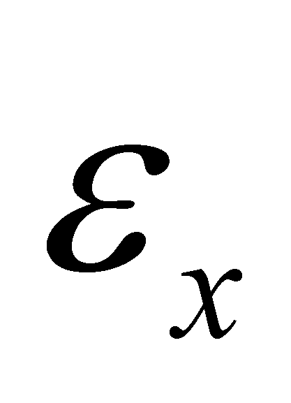
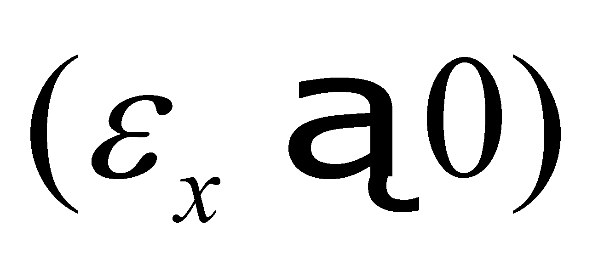
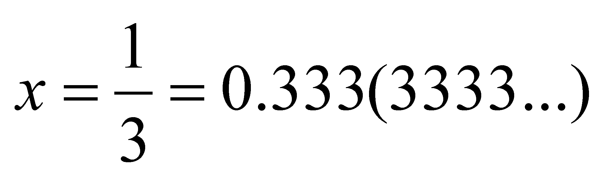
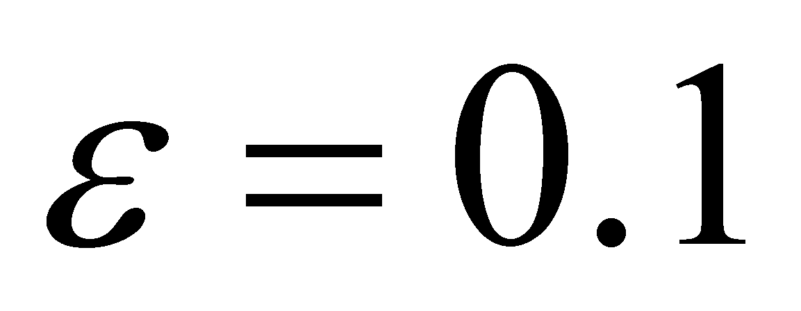
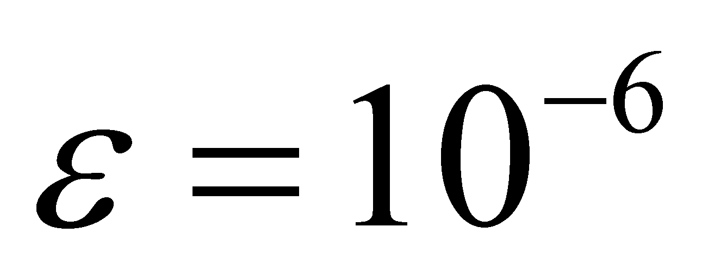

|
|
|
There are similarities and differences between the virtual distributions which are supported by set {R}, or by its intervals, briefly presented above, and the realizable distributions (which are also called in this paper as systemic). The similarity is that the systemic distributions also consist in a set of assignment relations between the value of the dependent variable and the values of the independent variable, and the domain of potential values of the independent variable makes-up the distribution’s support. The basic difference between the virtual and the systemic distributions is represented by the fact that the elements of the virtual distributions (according to their definitions) are mostly virtual objects (non-realizable as the class instances, because the support singular values which belong to set {R} contain an infinite quantitative information amount), while the systemic distributions are realizable objects, either only abstract, or abstract and material.
Comment 2.3.1: The following chapters will allow a better understanding of the concept regarding the realizability of an object. For the time being, it is enough to mention that an object is abstract realizable if its related information is finite, therefore, the information amount may be included in a finite Information Support System (ISS). For example, an usual numerical value is contained in a finite number of digits. An abstract object is virtual if it is associated with an infinite information amount; this kind of objects cannot be actually realized (as instances of the objects class). An abstract realizable object whose properties may belong to a material object shall be a material realizable object.
As we have already noticed from the previous subchapter, the primary distribution element is represented by a singular value yk of the distributed attribute, assigned to a singular value xk of the support attribute by means of a relation fk. The point of view on the singular numerical values and on the support domain amount is the essential difference between the virtual and the realizable distributions. If the virtual (mathematic) distributions are supported by the infinite domains and AAV (see Dirac distribution described in the previous chapter), the realizable distributions allows only finite interval supports, limited by the two boundaries, with values which were estimated in relation to the inner reference, and these intervals consist of a finite number of singular values.
Therefore, taking into account the support domain amount, a realizable object shall always have its properties distributed on a non-null and finite support domain. The most simple domain is the pointwise domain, any other domain could be made-up by means of composition (concatenation, joining) of a finite set consisting of such identical elements. As for this basic element of support domain, the objectual philosophy proposes a special denomination: domain point or dimensional point (DP) which is the geometrical representation of a normal singular value (for details, see annex X.3).
Definition 2.3.1: An absolute accurate singular value x which is associated with a non-determination interval11 with the amount  , becomes a normal singular value.
Comment 2.3.2: The non-determination interval has the role to substitute the infinite number of digits required for the display of an AAV, which should follow after a reasonable series of digits representing the normal singular value, by providing in this way the finiteness of the information amount required by the abstract realizability. For example, the following numerical value:

If it would be written according to its value from {R}, we should also have an infinite series of 3 figures after the decimal point. Practically, if it would be written as x = 0.333, this means that we have drop out the infinite interval as a number of figures included in brackets, that part becoming a non-determination interval. The association of this non-determination interval was done since the ancient times up to nowadays, the people always operating with normal singular values, but without considering the discrepancy between the elements of set {R} (according to its definition) and these normal numerical values. Further on in this paper, when we shall be dealing with singular numerical values, these will be normal values, if not otherwise mentioned. According to the fashionable language, the dimensional point (DP) may be considered as a quantum for a variable domain, but unlike the fundamental quanta h from the current physics field, the quantum DP does not have an universal size, but it depends on the Information Processing System (IPS) type which uses it. If it is operated with a single-digit after the decimal point, then, , and if the calculus is made with numbers with 6 decimals, then, 
In order to comply with the definitions which were above-mentioned in this chapter, we must warn the reader that if we have defined DP as a domain (interval), even if it is pointwise, this fact means that its boundaries must be settled according to definition 2.2.4. Because DP is informationally equivalent with a single-determined numerical value (normal singular value), another known value is needed, namely the inner reference of other adjacent DP. In this way, the amount of the non-determination range related to DP is the difference between two normal singular, successive values of the support domain.
Comment 2.3.3: In this way, the continuity and coherence of the structure of the elements belonging to the objectual philosophy is provided, as we are about to minutely see in the following chapters, after we shall enlighten ourselves by using the distribution concept about what does the object mean and what does the inner reference of an object mean. We shall also see that the relations between two objects are actually relations between their inner references, in case of two DP-type of objects, the reference are the two RAV which have been associated with the non-determination intervals (see annex X.3).
On such a support domain element (DP type), which, once again, informationally speaking, is equivalent with only a single known value (a singular value), the result is, according to the definition 2.2.1, that the value distributed by means of relation f shall also be a single one (but which have also an associated non-determination interval), therefore, the basic element of realizable primary distribution is a normal singular value, distributed on a DP support domain, or otherwise speaking, a normal value yk of the distributed attribute, determined through the relation fk by a normal support value xk.
Attention! Do not confound a non-determination interval of a variable value with an interval of deterministic variation of the same variable. If the inner differential quantitative information is null within the non-determination interval (the equivalent of an uniform distribution, equiprobable), this information is non-null within the deterministic variation (e.g. linear) interval. This aspect is approached in annex X.3, when we shall be dealing with the difference (in case of axis X, for example) between the domain quantum x and the elementary domain dx.
As for the realizable distributions, based on the above-presented issues, we may notice that the support of the primary achievable distributions is no longer continuous (as it was in case of the virtual distributions), but discrete, any of its finite interval being made-up from a finite number of normal singular values.
11 As we are about to see later on in this paper, non-determination means the lack (absence, nonexistence) of information.
Copyright © 2006-2011 Aurel Rusu. All rights reserved.